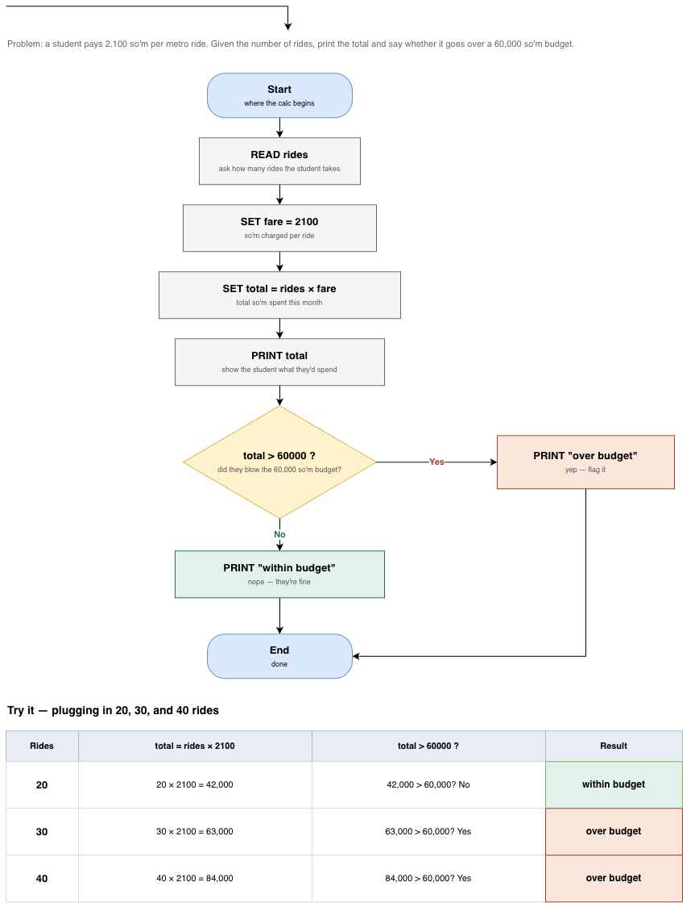

Anvar · Lab 1

Anvar · Lab 1
Compiled each one with g++ <file>.cpp -o <out>. Same errors show up in VS Code's terminal.
Deleted the ; at the end of line 4.
break1_missing_semicolon.cpp: In function 'int main()':
break1_missing_semicolon.cpp:4:46: error: expected ';' before 'return'
4 | std::cout << "Hello, Anvar!" << std::endl
| ^
| ;
5 | return 0;
| ~~~~~~
What happened: I forgot the semicolon at the end of that cout line. C++ needs one to know a statement is finished, and since I left it off, the compiler just kept reading straight into the next line. It only got confused once it hit return — so the error points there instead of at the line I actually messed up. Took me a second to realize the real problem was one line up.
Typed name in the cout line but never declared it anywhere.
break2_undeclared_variable.cpp: In function 'int main()':
break2_undeclared_variable.cpp:4:31: error: 'name' was not declared in this scope; did you mean 'tzname'?
4 | std::cout << "Hello, " << name << "!" << std::endl;
| ^~~~
| tzname
What happened: I used name in the cout line without ever declaring it first. The compiler had no idea what I meant, so it took a guess — it suggested tzname, some unrelated system variable that just happens to look similar. Definitely not what I meant, but I got a laugh out of that one.
Deleted the } that closes main().
break3_mismatched_brace.cpp: In function 'int main()':
break3_mismatched_brace.cpp:5:14: error: expected '}' at end of input
5 | return 0;
| ^
break3_mismatched_brace.cpp:3:12: note: to match this '{'
3 | int main() {
| ^
What happened: I deleted the closing brace on main() by accident. Since every { needs a matching }, the compiler reached the end of the file still thinking it was inside main() — so instead of blaming one specific line, it pointed all the way back to the opening brace I never closed.